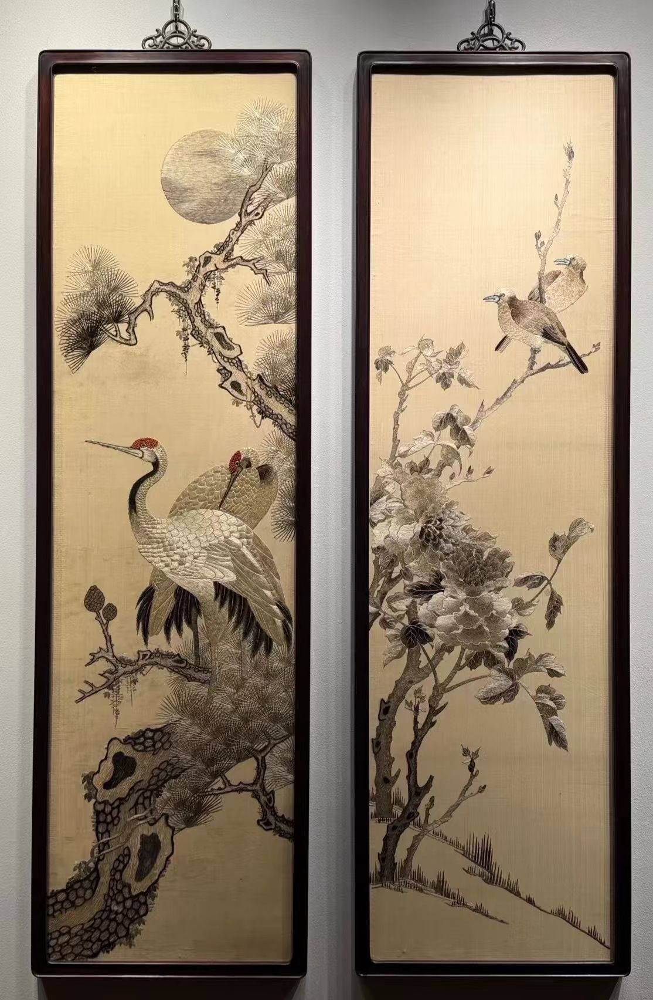

蜀韵
[ REC ] Chengdu Vlog
Chengdu · A World Cultural Metropolis
锦绣天府
烟火人间三千年
从三星堆的青铜神树，到太古里的现代繁华；从茶馆里的慢生活，到火锅里的沸腾江湖。成都，一座来了就不想走的城市，正以国际化的视野与市井的温情，向世界展开一幅灿烂的画卷。
3000+建城史
2140万常住人口
7项世界级非遗
1/3全球野生大熊猫
川剧 Vlog 打卡
蜀风雅韵
SICHUAN HERITAGE & CULTURE
川剧 · 变脸与吐火
蜀戏冠天下，变脸更是独步梨园。一转头、一拂袖，赤橙黄绿青蓝紫，千变万化皆在瞬息之间。它不仅是技巧，更是巴蜀大地火辣性格的极致外化，是舞台上最神秘的东方幻术。
而吐火，则是川剧中最具震撼力的绝活，炽热的火焰从口中喷薄而出，点燃全场热情，展现了川人骨子里的豪迈与奔放。
蜀锦 · 蜀绣
锦江水暖，浣花溪畔。蜀锦以其色彩鲜艳、纹样生动著称，汉代即设有“锦官城”；蜀绣则以针代笔，以线晕色，享有“蜀中之宝”的美誉，被誉为中国四大名绣之一。
千丝万缕间，织就的是天府之国的富庶与温婉，也是南方丝绸之路起点的辉煌印记。

街拍 Vlog 集锦
DRAG / CLICK TO EXPLORE
雪山下的公园城市
CITY PROMOTIONAL FILM
正在直播 / REC
深夜放毒 Vlog
百味天府
TASTE OF CHENGDU
沸腾火锅
红油翻滚，毛肚鸭肠，麻辣鲜香，人间至味。
担担面
面条细薄，卤汁酥香，咸鲜微辣，香气扑鼻。
钟水饺
皮薄馅嫩，红油重辣，咸中带甜，风味独特。
盖碗茶
一茶一世界，一盖一乾坤。成都慢生活的灵魂。
世界名城
GLOBAL CONNECTIONS
0
外国领事机构
0
国际（地区）航线
0
双国际机场
0
国际友好城市
巴适得很！